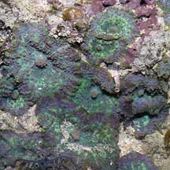
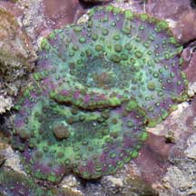
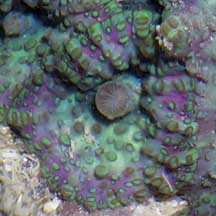
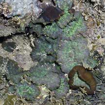
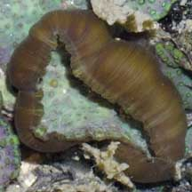
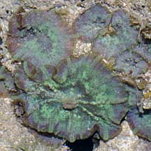
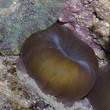
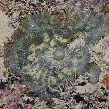
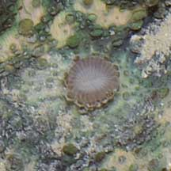

|
|
| corallimorphs text index | photo index |
| Phylum Cnidaria > Class Anthozoa > Subclass Zoantharia/Hexacorallia > Order Corallimorpharia |
| Beaded
corallimorph Discosoma nummiforme Family Discosomidae updated Jul 2024 Where seen? This little disk-like animal with round bead-like bumps is sometimes seen in small groups on coral rubble on many of our Southern shores. Features: Each polyp 2-4cm in diameter, sometimes seen in groups of 5-10 polyps. Tentacles are bead-like, forming sparse rows that radiate from the central mouth. The mouth is often seen held upturned and is quite prominent. The outer edge of the oral disk is smooth (does not have a fringe of tentacles). Colours seen include beige, green, blue, purple, pink. Sometimes several different colours seen on one animal. The underside is smooth and brown. The animal can tuck its oral disk into its body column when it is exposed out of water. A study found that Discosoma nummiforme can also look like Stubby corallimorphs. Status and threats: As at 2024, it is assessed not to be approaching the criteria for being listed among the threatened animals in Singapore. |
|
 St. John's Island, May 05 |
 |
 Upturned mouth. |
|
 St. John's Island, May 06  Smooth underside. |
 Sisters Island, Jul 10  |
 Sisters Island, Aug 09  |
*Species are difficult to positively identify without close examination.
On this website, the animals are grouped by external features for convenience of display.
| Beaded corallimorphs on Singapore shores |
On wildsingapore
flickr
|
| Other sightings on Singapore shores |
|
Links
References
|